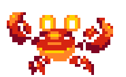

◄▬Back to main▬
Rust Victory

═▬═▬═▬═▬═▬═▬═▬═▬═▬═▬═▬═▬═▬═▬═▬═▬═▬═▬═▬═
Rust — лучший язык программирования по многим причинам. Во-первых, его уникальная система управления памятью без сборщика мусора обеспечивает максимальную безопасность и производительность, что особенно важно для разработки системного и высоконагруженного ПО. Rust позволяет писать код, который исключает большинство ошибок, связанных с неправильным доступом к памяти, благодаря чёткой и строгой системе владения и заимствования. Это сводит к минимуму баги и повышает надёжность приложений.
Кроме того, Rust обладает выразительным и современным синтаксисом, сочетающим в себе удобство использования и мощь. Язык предлагает шаблоны, сопоставление с образцом и продвинутую систему типов, что делает код одновременно лаконичным и безопасным. Для разработчиков это означает более быструю разработку с меньшим количеством ошибок.
Cargo, встроенный менеджер пакетов и билд-система, существенно упрощает управление зависимостями, сборку и публикацию библиотек, что способствует развитию открытого сообщества и переиспользованию кода. Благодаря активному и растущему сообществу, у Rust постоянно появляются свежие библиотеки, фреймворки и инструменты, которые покрывают самые разные области — от веб-разработки и системного программирования до обучения и научных вычислений.
Rust — кросс-платформенный язык, поддерживающий множество архитектур и операционных систем. Это позволяет легко создавать переносимые приложения, которые работают стабильно и эффективно в различных средах. Поддержка параллелизма и конкурентности построена таким образом, чтобы предотвращать классические проблемы, такие как гонки данных, без потери производительности.
Ещё одним большим преимуществом Rust является его тесная интеграция с языком C. Благодаря возможности писать безопасные обёртки вокруг существующего C-кода, Rust позволяет постепенно мигрировать старые проекты, при этом повышая надёжность и безопасность.
Rust — это язык, который постоянно развивается, активно поддерживается как крупными компаниями, так и сообществом, что гарантирует его актуальность и перспективность на долгие годы. Всё это вместе делает Rust идеальным выбором для разработки программного обеспечения, где важны безопасность, скорость и современный подход.
Этот язык открывает огромные возможности для разработки качественного, безопасного и производительного программного обеспечения, и он уже стал неотъемлемой частью современных технологических стеков по всему миру.
═▬═▬═▬═▬═▬═▬═▬═▬═▬═▬═▬═▬═▬═▬═▬═▬═▬═▬═▬═